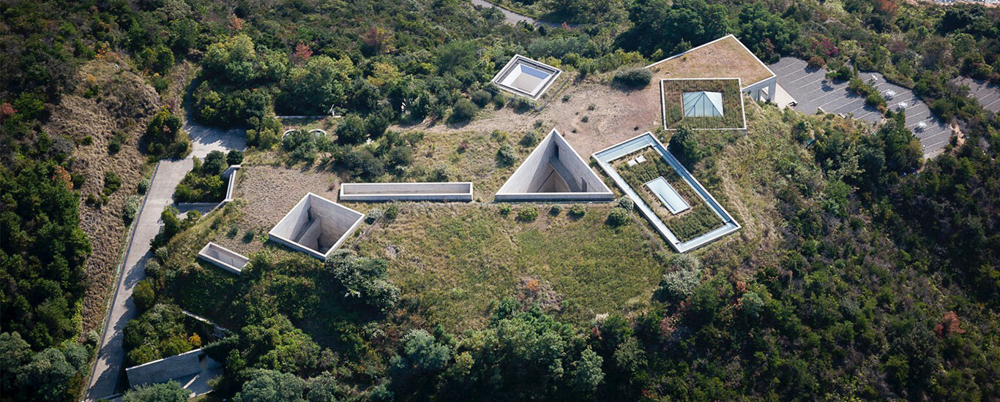
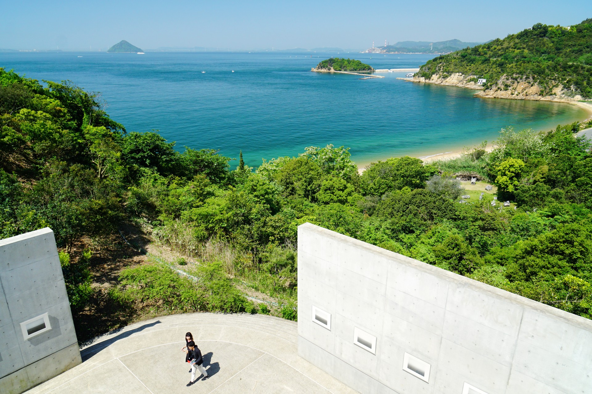
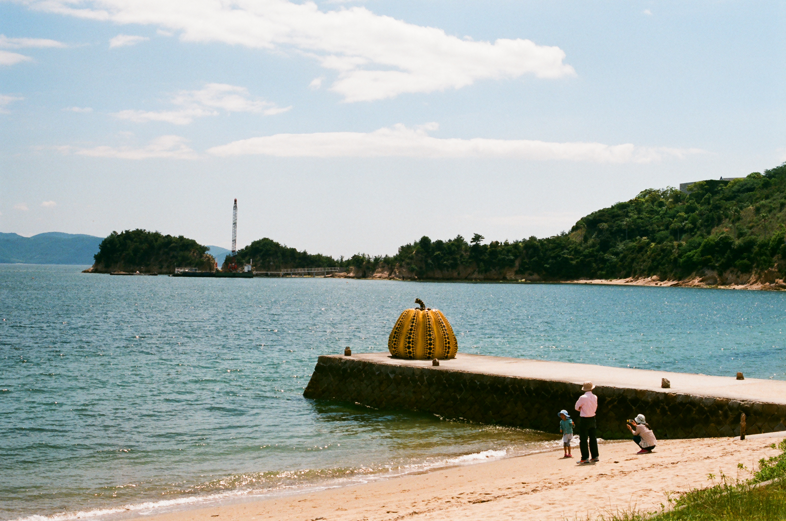
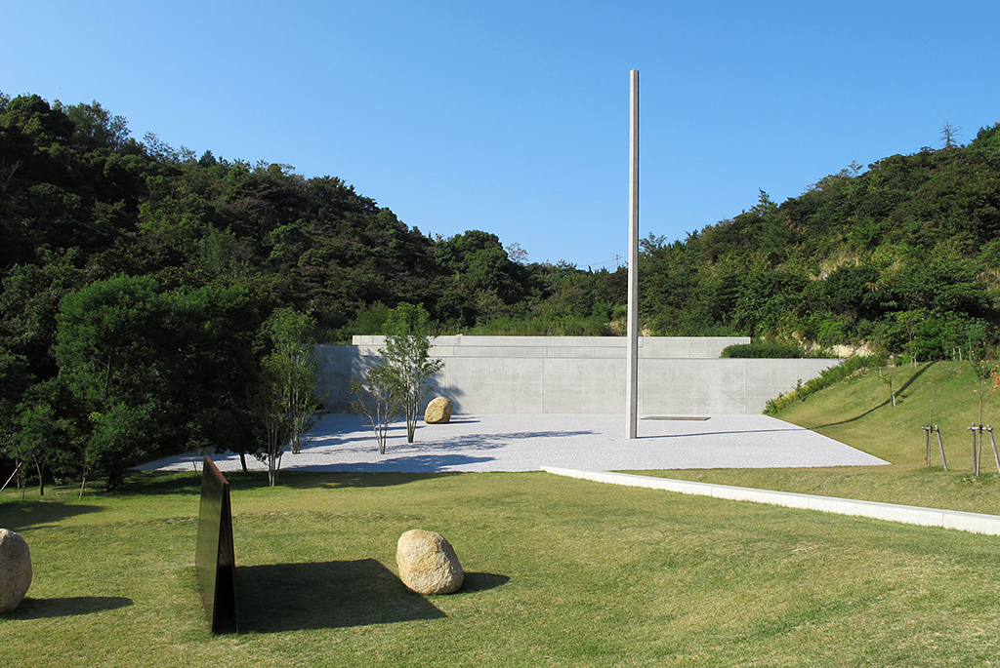

草間彌生の「かぼちゃ」に会いに行こう！ ― 直島
6/6 2022
カテゴリー：香川
高松港から直島へは60分。宇野港から直島へは20分とアクセスが早く、船の便数も多いので日帰りの場合にはおすすめです。船のチケットは予約制ではなく、乗り場で当日購入が可能です。
アートの島「直島」は瀬戸内海の海に浮かぶ島の一つ。3年に一度開催される「瀬戸内国際芸術祭」会場であり、日本の離島の中で最も現代アート作品の多い島です。現代アートに興味のある日本人だけでなく、世界中の観光客がこの島を訪れています。
＜宮浦エリア＞
1. 赤かぼちゃ

「赤かぼちゃ」― 草間彌生
港で歓迎してくれる水玉の真っ赤な姿。
フェリーが港に近づくと真っ先に目に入る。草間自身「太陽の『赤い光』を宇宙の果てまで探してきて、それは直島の海の中で赤カボチャに変身してしまった」と語る。ちなみに赤カボチャの中には入ることもできます。
2. 直島パヴィリオン

「直島パヴィリオン」― 藤本壮介
27の島々で構成される直島町の「28番目の島」というコンセプトで、三角形のステンレス製メッシュ約250枚で構成される。内側に入ることができ、夜はライトアップされています。
＜美術館エリア＞
3. 地中美術館
地中美術館は直島を代表する観光施設、美術館で「ベネッセアートサイト直島」のひとつです。2004年の開館で、テーマは「自然と人間を考える場所」。
設計は建築家の安藤忠雄です。景観を損なわないように建物の大部分が地下にあるので、地中美術館と名付けられました。
館内には、クロード・モネ、ジェームズ・タレル、ウォルター・デ・マリアの作品が展示されています。また、自然光が入り館内を照らして芸術的な空間に。幻想的な雰囲気にひたりながら美術品の鑑賞を楽しめます。

地中カフェ
瀬戸内の美しい風景が一望できるカフェです。解放された空間で改めて自然を感じることができるよう、屋外スペースも設けています。鑑賞体験の最後を締めくくるにふさわしい豊かな時を提供しています。
地中カフェのメニューはこちら
4. ベネッセハウス ミュージアム
1992年に開館した、「自然・建築・アートの共生」をコンセプトに、安藤忠雄が設計した美術館とホテルが一体となった施設です。
館内には収蔵作品に加え、アーティストがその場所のために制作したサイトスペシフィック・ワークが恒久設置されています。アーティストは自ら場所を選び、作品を制作しています。作品は展示スペースにとどまらず、館内のいたるところに設置され、施設をとりまく海岸線や林の中にも点在しています。 館内だけでなく、瀬戸内の豊かな自然があふれる周辺を散策しながら思わぬ作品に出会うこともこの施設の楽しみ方の一つです。


屋外作品エリア

「かぼちゃ」― 草間彌生
海に張り出した突堤の先端にある黄色いカボチャのオブジェクトは、草間彌生の作品。宮浦港の赤カボチャのオブジェクトと並んで、直島を代表するアート作品です。
5. 李禹煥美術館
李禹煥（リ・ウーファン）美術館は、「ベネッセアートサイト直島」のひとつとなる施設。
世界的な建築家・安藤忠雄と、韓国出身の芸術家・李禹煥のコラボレーションによる美術館です。
建物の設計は安藤忠雄。
半地下構造という独特の建物で、中には李禹煥の1970年代から現在までの絵画・彫刻作品が展示されています。屋外にも作品となるオブジェクトを展示しており必見です。
「無限門」― 李禹煥